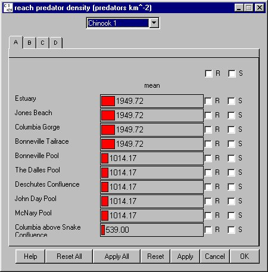

Reach Predator Density
Selecting Reservoir Reach Predator Density opens a window for setting predator densities by species for each river segment. Densities are given as number of northern pikeminnows per square kilometer of reservoir, excluding the tailrace and forebay (set in DamPredator Density). This measure, based on full pool dimensions, is effectively a measure of the relative number of predators in a river segment. A segment is defined as a section of river between river elements (such as dams and confluences). Predation mortality in COMPASS is related to predator abundance, predator temperature response, and a predator activity coefficient. These factors combine to determine a predation rate which is applied to the smolt population on a time-step basis. To use these parameter values during a run, select Gas and Pred Mortality as the Mortality Model in RunRuntime Settings.
Reach Predator Density opens a window for setting predator densities by species for each river segment. Densities are given as number of northern pikeminnows per square kilometer of reservoir, excluding the tailrace and forebay (set in DamPredator Density). This measure, based on full pool dimensions, is effectively a measure of the relative number of predators in a river segment. A segment is defined as a section of river between river elements (such as dams and confluences). Predation mortality in COMPASS is related to predator abundance, predator temperature response, and a predator activity coefficient. These factors combine to determine a predation rate which is applied to the smolt population on a time-step basis. To use these parameter values during a run, select Gas and Pred Mortality as the Mortality Model in RunRuntime Settings.
This is a Slider Input window. Click on the letter tabs to page through the Reach list.
This Slider Input window includes a menu for selecting by Species. You can group sliders by: Reach (R) or Species (S).
- If you group sliders by Reach (R), you are modifying the value for the specified Species at all reaches in the group.
- If you group sliders by Species (S), you are modifying the value at the specified Reach for all species.
- If you group slider by both Reach (R) and Species (S), you are modifying the value for all species at all reaches in the group.

Reach Predator Density window